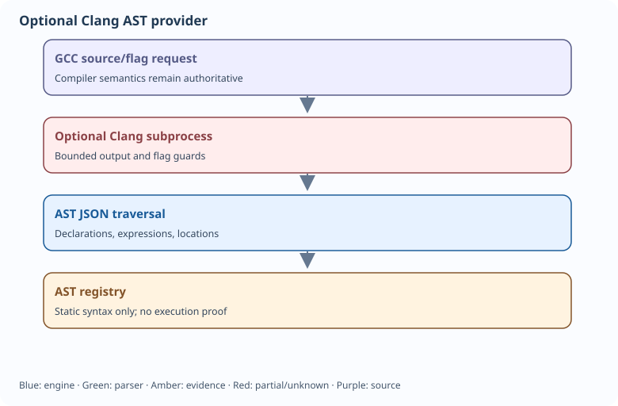
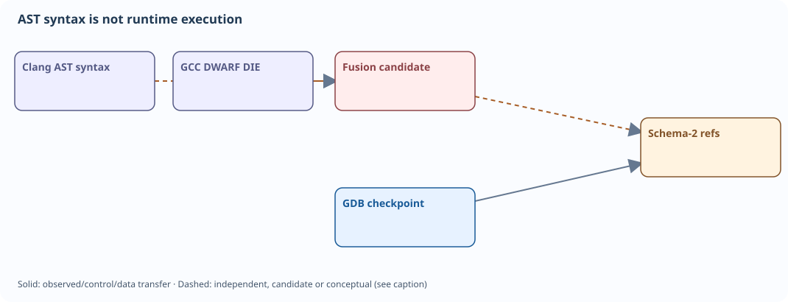

29 · Optional Clang source-syntax extraction #
Key terms #
| Term | Plain meaning |
|---|---|
| AST | Abstract syntax tree: a structured version of source constructs such as function calls, declarations and fields. |
| Source span | The file and character range where Clang located a written construct. |
>
The big picture #
src/clang_ast.rs is an opt-in, bounded second compiler's syntax view. trace_program invokes analyze(&BuildConfig, clang_path, Option<&TypeRegistry>) only when config.clang_ast is true and time remains; it stores one session-level SourceMetadataRegistry, including per-translation-unit failure reasons, without withholding GDB execution when Clang fails (trace.rs:368-391). GCC DWARF and GDB retain layout and runtime authority; see DWARF extraction and fusion.
Registry, spans and trace-local IDs #
SourceMetadataRegistry owns provider/version, cross-provider incompatibility reason, AstUnit statuses, source declarations/expressions, heap-call candidates and ambiguities, timing and limitations. SourceDeclaration records kind/name/type spelling, name position, function and optional initializer-expression ID; SourceExpression records kind/span/type/operator, access syntax, callee/classification, operand IDs, declaration references and sizeof operand. Optional DWARF IDs, type evidence and DwarfMemberRef are links, not C execution evidence (clang_ast.rs:22-163). SourceSpan uses source byte offsets, line/column and direct versus macro_expansion provenance, with optional spelling location. Neither source ID (tu0:d..., tu0:e...) nor Clang's raw node ID is a runtime activation ID: extract assigns serial IDs in retained traversal order, then resolves temporary raw IDs into these serialized references (clang_ast.rs:86-163, clang_ast.rs:578-586, clang_ast.rs:646-706, clang_ast.rs:800-813). Repeated analysis on the test fixture checks stable (ID, kind, start offset) triples (tests/clang_ast.rs:251-289).
Invocation and option fidelity #
clang_flags(&BuildConfig) -> Result<Vec<String>, String> forwards build definitions/includes and classified compiler options in order: language mode, preprocessing/include flags, -f/-m/-pthread, and supported optimization levels; it drops -g and warnings, but rejects unclassified flags and missing option arguments rather than silently analyzing a different preprocessed program (clang_ast.rs:178-225). Clang receives -Xclang -ast-dump=json -fsyntax-only -x c -O0, then the forwarded flags and user source. The -O0 baseline plus user optimization order matters for macros such as __OPTIMIZE__; the GCC/Clang fixture independently checks that -O2 chooses optimized_branch (clang_ast.rs:290-301, tests/clang_ast.rs:15-79). Accepted compiler-specific -f*, -m* or -pthread can still mean different things to GCC and Clang: analyze retains syntax but sets cross_provider_correlation_unavailable, withholding DWARF correlation; fusion also honors this gate (clang_ast.rs:248-256, clang_ast.rs:386-390, tests/clang_ast.rs:556-597). Acceptance is not proof of semantic equivalence.
analyze uses build.user_sources() rather than the generated wrapper and analyzes at most 16 TUs in canonical path order, with an eight-second shared budget, per-Clang three-second deadline, tool-only 512 MiB best-effort memory limit, 1 MiB input source and 8 MiB output cap. Supervisor cancellation, timeout, truncated output, nonzero Clang status or warnings that a configured argument was unused/unsupported make that TU unavailable; malformed JSON does too (clang_ast.rs:228-390). An extraction failure after some records are retained marks the unit partial, while unsupported expression nodes also mark partial with children retained; the unit reports byte, node, parse and registry timings. A failed Clang binary still leaves a compiled runtime trace (tests/clang_ast.rs:438-506).
JSON traversal and conservative source ranges #
span(node, path, &LineIndex) computes byte-based positions from Clang expansion offsets and token lengths, rejects zero/out-of-range spans and included-header or foreign-file locations, and records spelling location separately for macros. LineIndex::line_column derives line/column from the source bytes instead of trusting a foreign file's position (clang_ast.rs:397-488). extract(&Value, &Path, &[u8], unit_id, &mut AstUnit, &mut SourceMetadataRegistry, deadline) -> Result<(), String> walks inner nodes with an explicit depth/function/record stack, bounded to 100,000 nodes and depth 96; skipped header spans are not traversed into user records (clang_ast.rs:14-20, clang_ast.rs:560-636).
It retains VarDecl, ParmVarDecl, FunctionDecl, FieldDecl and selected calls, operators, subscripts, members, casts, conditionals, declaration references and literals, with limits of 2,048 declarations and 4,096 expressions. An unrecognized expression/operator/literal increments unsupported_nodes; unsupported wrapper nodes may still expose supported children. visible_child_ids traverses at most 64 descendant nodes through nonselected wrappers, and a deferred pass resolves operand IDs, referenced declarations and initializer IDs only if retained (clang_ast.rs:490-558, clang_ast.rs:637-813). direct_callee follows at most eight first-child wrappers to a DeclRefExpr; malloc/calloc/realloc/free is classified as a standard allocator only if that declaration ID was observed among header FunctionDecls. Otherwise calls are direct_other or indirect_or_unknown, not inferred from spelling alone. MemberExpr preserves dot/arrow syntax, base type spelling and member name; sizeof preserves whether its argument is a type or expression (clang_ast.rs:504-537, clang_ast.rs:569-575, clang_ast.rs:700-794). The GNU-expression fixture verifies partial extraction rather than false completeness (tests/clang_ast.rs:508-524).
Declaration matching against GCC #
When DWARF exists and the provider gate permits it, correlate_declarations indexes DWARF declarations by canonical (file, line, column, name, function) and a separate line-only key. FunctionDecl matches subprogram, VarDecl/ParmVarDecl match variable/parameter; FieldDecl is deliberately left for the parent-type/member resolver in fusion. It selects one compatible exact-position DIE, preferring a declaration-only subprogram DIE over a definition. A fallback to one line match is allowed only when at least one side lacks a column, never when two present columns disagree. Zero or multiple results remain unresolved or ambiguous; a type link is kept only if the matched type ID exists in the registry (clang_ast.rs:816-945, clang_ast.rs:386-390). Focused tests cover duplicate exact matches, missing-column fallback, fields and function declaration preference (clang_ast.rs:1087-1153, clang_ast.rs:1210-1275). This is a static location correlation, not proof that a declaration was instantiated at a stop.
Heap calls are source-line candidates #
correlate_heap_calls(&mut SourceMetadataRegistry, &[HeapEvent], &Path) clears prior candidates/ambiguities, indexes calls by canonical file and every covered line up to start+64, with separate direct/macro buckets. Only events whose attribution says resolved_return_address_minus_one and have source file/line qualify; operation must match (malloc/calloc with allocation, realloc with reallocation, free with free). One direct compatible call with no compatible macro call yields unique_direct_call_on_resolved_line_not_exact_execution; multiple calls or macro-only calls yield explicit ambiguity (at most eight displayed expression IDs). Empty match stays empty; cancellation or 250 ms stops the event loop with a limitation (clang_ast.rs:947-1054). The real mixed direct/macro free test demonstrates why one return-address line cannot choose a particular call (tests/clang_ast.rs:190-249); synthetic tests distinguish one candidate, multiple calls, macro-only and the eight-ID cap (tests/evidence_fusion.rs:355-440). No call candidate supplies runtime argument values, allocation identity or expression execution. See heap instrumentation and evidence constraints.
Diagram notes #
Clang AST pipeline #


Optional bounded Clang syntax extraction is retained independently of GCC/GDB runtime evidence.
Syntax versus runtime #


A source expression or declaration link is not proof that a particular dynamic call executed.